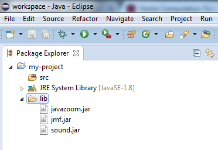
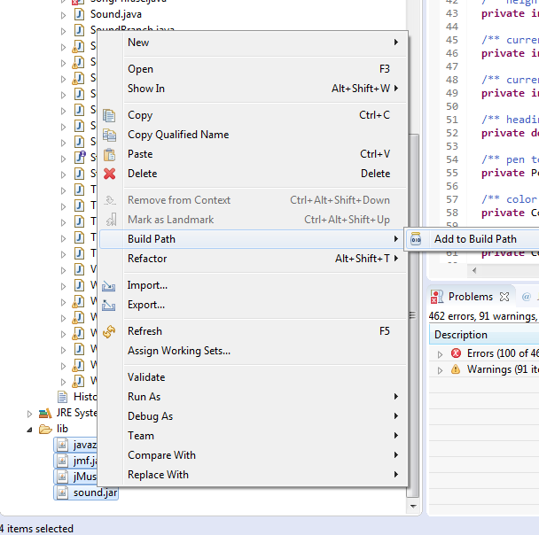
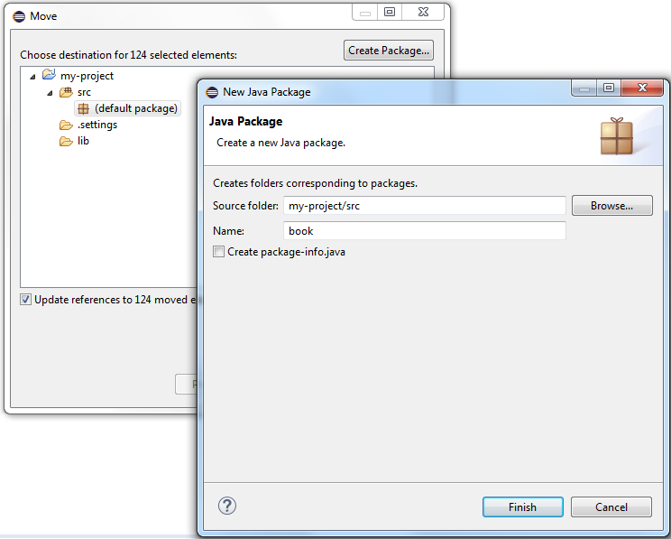
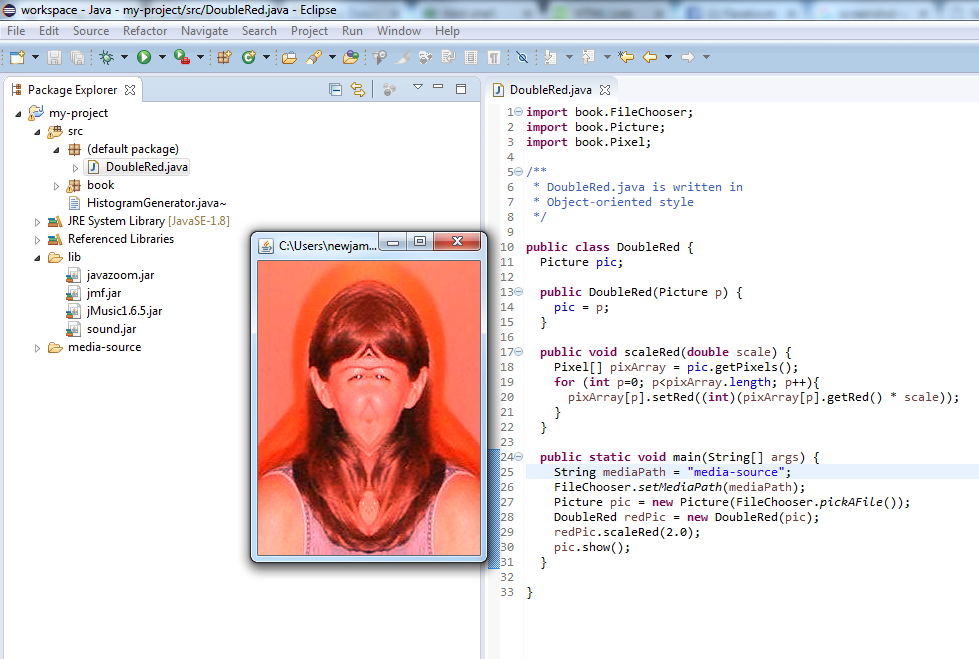

Setting up Eclipse for "Problem Solving with Data Structures: A Multimedia Approach"
Many java developers prefer to write code in an advanced integrated development environment (IDE) like Eclipse, Netbeans, or IntelliJ IDEA.
They allow you to quickly navigate your code, visually debug, refactor, synchronize with source code repository like github, and other features.
This guide will help you set up a project in the Eclipse IDE for programming the examples and problems from the book Problem Solving with Data Structures: A Multimedia Approach by Mark Guzdial and Barbara Ericson.
- Download and extract Eclipse IDE
- Run eclipse.exe and start a new project.

- Download and exctract java-source.zip from the book's website
- Download and extract the
media-source-ds.zip file from the book's website.
- Make a new folder called
lib in your eclipse project directory
- Copy the
jar files from java-source to you projects lib directory 
- Download the jmusic jar from the project page
- Copy the jmusic jar into your eclipse project's lib directory.
- In the eclipse IDE, select the jars, right click them, and add them to your class path
- Move all of the books classes into a new java package
- Select all of the java files you added to your eclipse project
- right click them, 'refactor', then 'move'
- Create a new package for them

- You should now have a project read to go! To test this:
- Copy the
DoubleRed.java file into your projects src directory and run it!
- Hint: you will have to import the classes from your newly created
book package
- Hint: Make sure the
mediaPath is set correctly to the media-source directory you downloaded and extracted earlier
- Here is what happened when I ran the file and selected an image
Here is this tutorial and my eclipse project after following these steps.
This is just the begining!
In a more professional project you might use a build tool like maven or gradle to automatically download your dependencies from an online repository instead of copying and pasting .jar files everywhere.